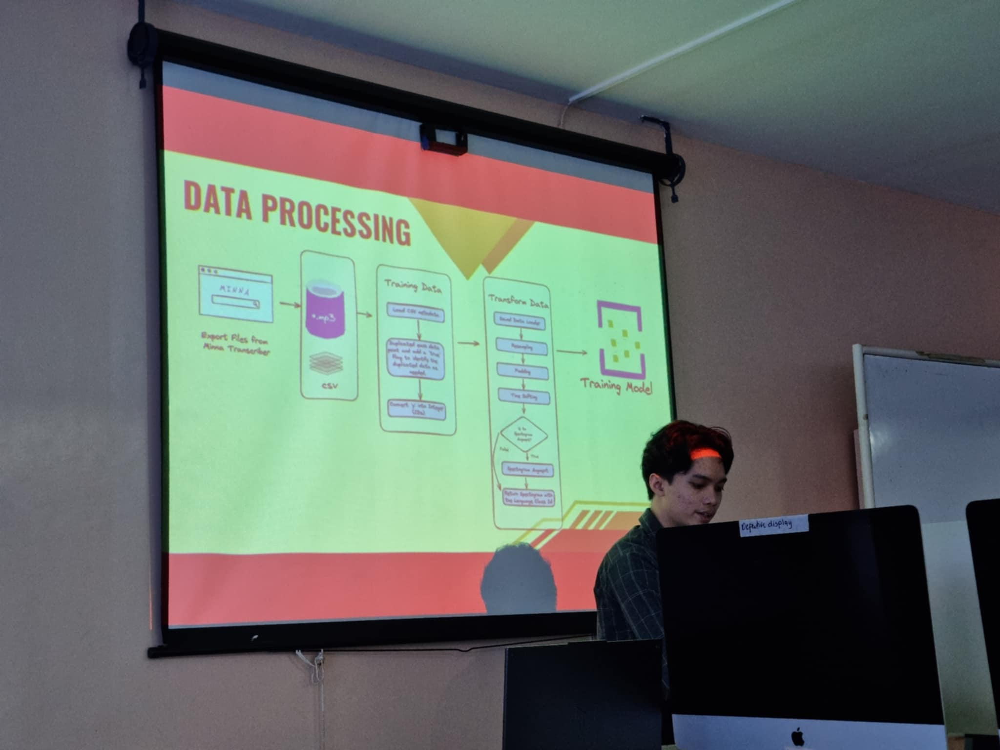
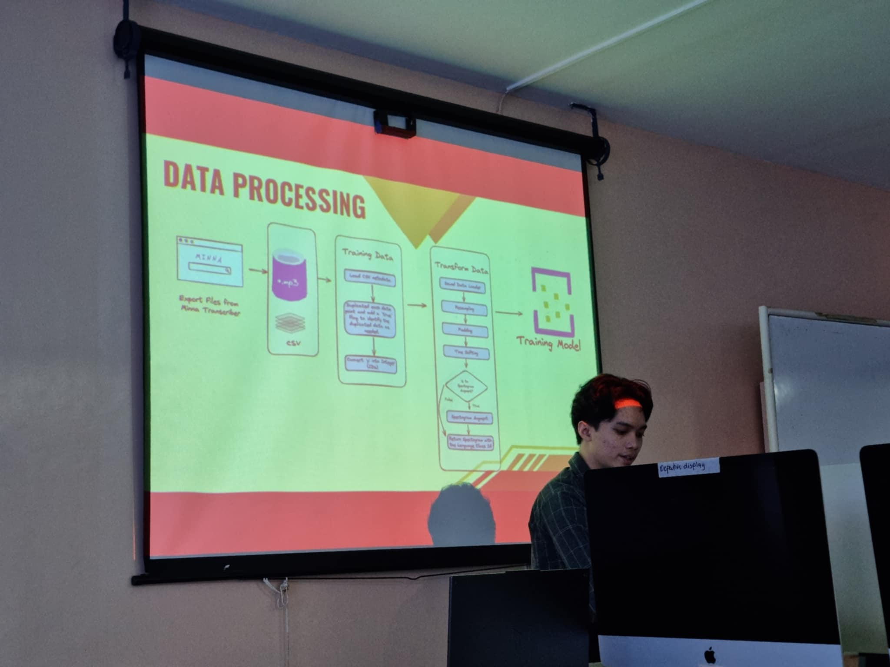

Enhancing Audio Processing: Development and Evaluation of a Transcriber tool
 

Reflection
Attending the PCSC 2024 seminar was an enriching experience, particularly the presentation delivered by Mr. Carlo Castro and Mr. Muslimin Ontong, titled "Enhancing Audio Data Processing." Their research focused on refining artificial intelligence techniques to improve language classification for the SULTIWAG application, a tool dedicated to supporting indigenous language preservation. The study showcased not only technical innovation but also a deep cultural and social relevance. One of the most compelling aspects of their work was the emphasis on increasing the classification accuracy of AI models—specifically improving from an initial 70% to 83%—through enhanced data preprocessing methods and the integration of Convolutional Neural Networks (CNNs). This significant improvement underlines how critical proper data preparation is to the success of machine learning applications, especially in the context of audio and linguistic data.
Their dataset was both substantial and meaningful: 2,959 audio recordings, which included 314 samples of the Manobo language and 405 of the Kagan language. These are both underrepresented indigenous languages in the Philippines, making the project not only a technical endeavor but also a cultural mission. By working with spectrogram-based analysis and drawing on contemporary literature in AI and language preservation, the team underscored the value of applying modern technologies to protect and revitalize linguistic heritage that is at risk of disappearing. The mentorship provided by Khristine Mae Adlaon and Aurora Manseras added further depth to the research, ensuring that both the technical rigor and cultural sensitivity of the project were preserved. Their guidance likely helped align the research outcomes with broader academic standards and ethical considerations, which is essential in studies involving indigenous communities. As a participant, I found the presentation not only informative but also inspiring. It challenged me to think about the intersection between technology and culture, and how we, as future researchers or professionals, can contribute meaningfully to both fields. The presenters demonstrated that AI is not just a tool for automation or efficiency—it can also serve as a bridge between tradition and innovation, helping ensure that the voices of indigenous communities are not only heard but also preserved for generations to come. Overall, the seminar served as a powerful reminder of the real-world impact that thoughtful and ethically grounded research can have. The work of Mr. Castro and Mr. Ontong is a testament to the importance of inclusive technological development and reminded me that behind every dataset are people, histories, and identities worth valuing and protecting.
Key Takeaways
- AI can significantly improve language preservation (accuracy increased from 70% to 83%)
- Proper data preprocessing is crucial for audio classification models
- Convolutional Neural Networks (CNNs) are effective for spectrogram-based language analysis
- Indigenous language datasets require both technical and cultural sensitivity
- Technology serves as a bridge between cultural preservation and innovation
- Ethical considerations are essential when working with indigenous communities
- Real-world AI applications can have meaningful social impact
The speaker demonstrated several real-world examples of AI implementations that are making significant impacts...